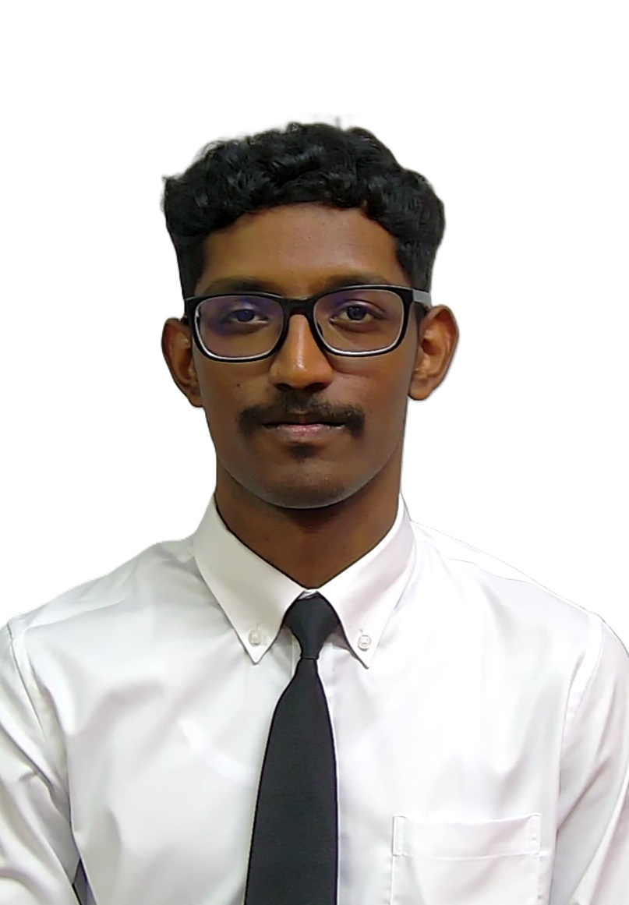

Kugaann SureshHome : Kuala Lumpur
Age: 21 years
Course: Bachelor of Software Engineering with Honours
University: Universiti Teknologi Malaysia
I am a software engineering student at Universiti Teknologi Malaysia (UTM), Skudai, with a passion for building efficient and secure systems. My journey in technology is driven by curiosity and a desire to solve problems through coding, algorithms, and innovative design. Beyond academics, I enjoy exploring new ideas, learning continuously, and applying my skills to real-world challenges that make a meaningful impact.